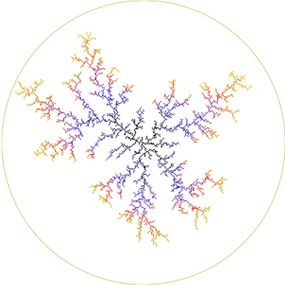
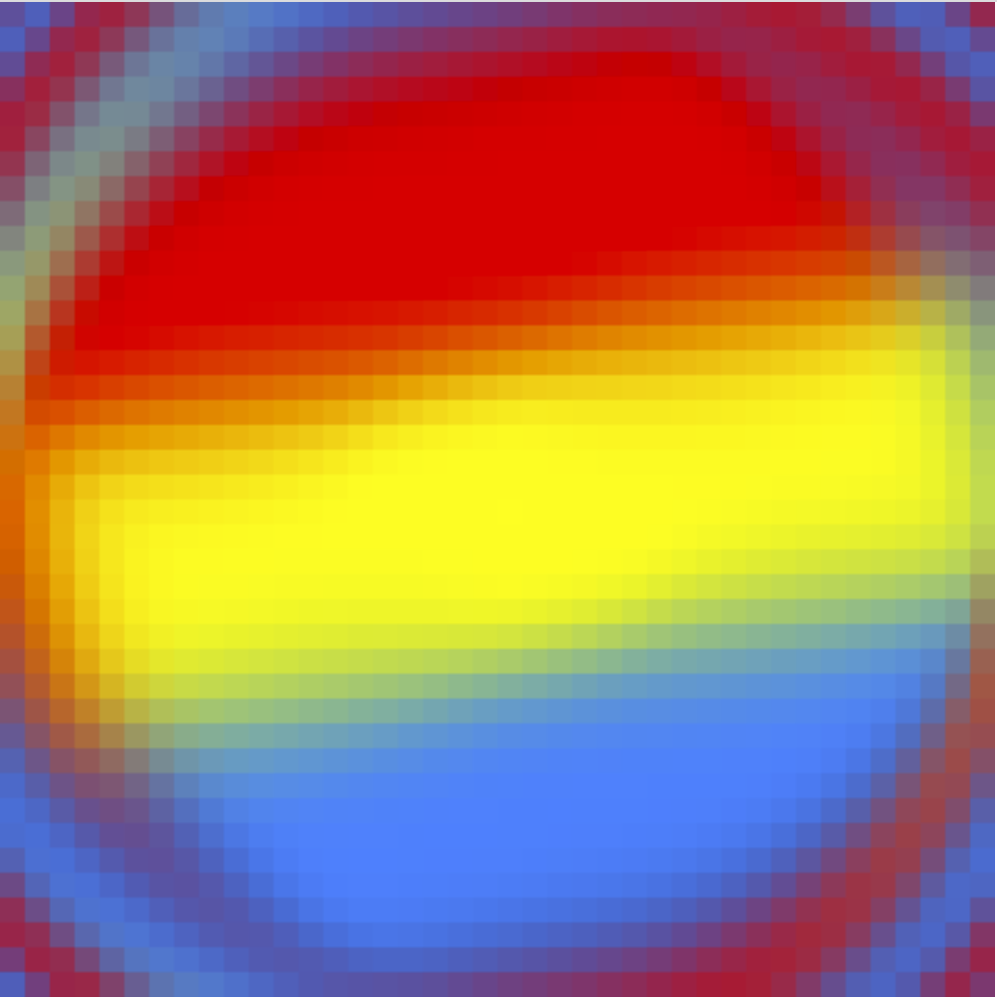
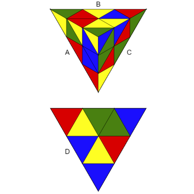
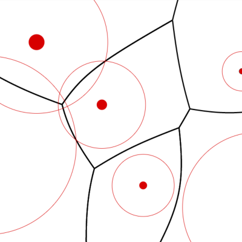
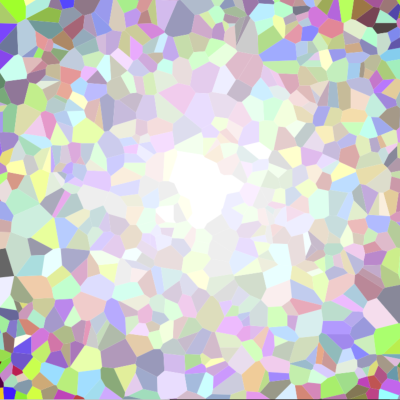
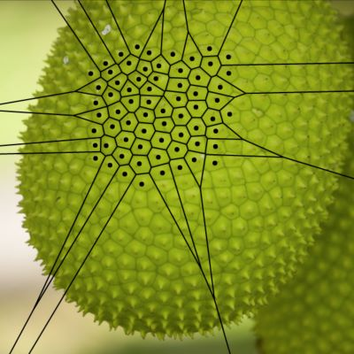
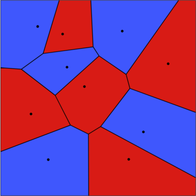
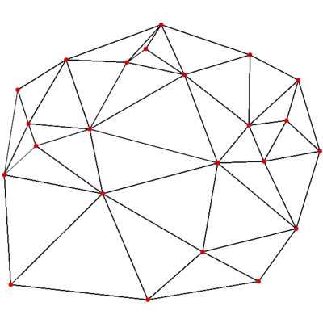
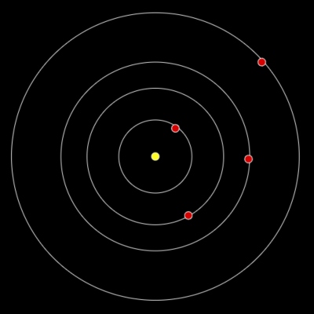
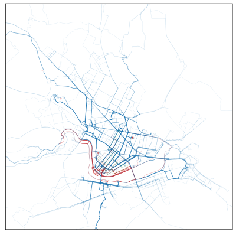

| Image: | Program: | Description: | Date of Creation: |
|---|---|---|---|
|  | Diffusion-limited aggregation | Simulation of growth of clusters by particles undergoing random walks (Brownian motion) | January 2021 |
|  | Fluid Simulation (incomplete) | Real-time and interactive 2D fluid simulation (currently just advects a fixed velocity field) | May 2018 |
|  | Pyraminx puzzle | Solve a tetrahedron version of the Rubik's cube | December 2017 |
|  | Weighted Voronoi diagrams | Generate additively-weighted Voronoi diagrams | December 2015 |
|  | Voronoi generator | Generate Voronoi diagrams and overlay with images | April 2018 |
|  | Voronoi visualizations | Visualize Voronoi diagrams in various ways | February 2016 |
|  | Voronoi game | 2-player game of placing points to maximize area of Voronoi regions | October 2015 |
|  | Delaunay triangulation | Calculate Delaunay triangulation for points placed in the plane | October 2015 |
|  | N-body simulator | Add planets that gravitationally interact | September 2014 |
|  | Strava plotting | Python scripts for generating heat maps (single images or animations) of activities logged on Strava | January 2022 |